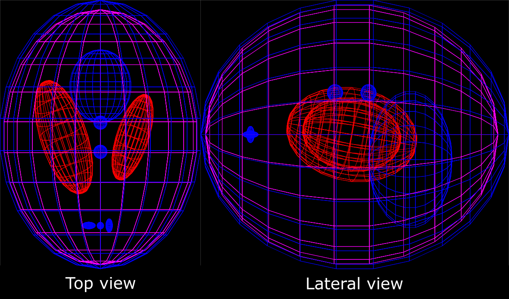
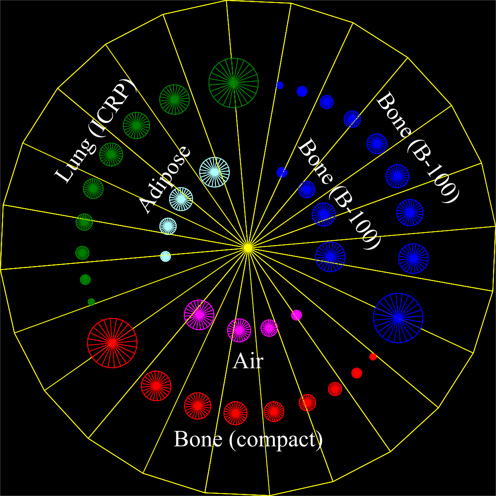

Attention
CBCT Example¶
This example details the setting up of a CBCT system with the following geometric parameters.
Parameters |
Value |
|---|---|
Source-to-detector distance |
1500 mm |
Source-to-isocenter distance |
1000 mm |
Detector pixel size |
0.338 \(\times\) 0.338 mm2 |
The number of detector pixels |
1024 \(\times\) 1024 |
The following parameter files to be included in your simulation are detailed in the subsections below: materials, flat panel detector, source, and scorer. The 3D Shepp-Logan phantom and contrast phantom were built to test the CBCT system.
Materials¶
The following should be included in your materials.txt parameter file:
#================ Material definition ================
#================ CsI ================
sv:Ma/CsI/Components = 2 "G4_Cs" "G4_I"
d:Ma/CsI/Density = 4.51 g/cm3
d:Ma/CsI/MeanExcitationEnergy = 553.1 eV
uv:Ma/CsI/Fractions = 2 0.511549 0.488451
s:El/G4_Cs/Symbol = "Cs"
s:El/G4_I/Symbol = "I"
s:Ma/CsI/DefaultColor = "pink"
d:Ma/CsI/MinimimIonization = 5.05 MeV/cm
d:Ma/CsI/CriticalEnergy = 11.17 MeV
u:Ma/CsI/ScintillationYield = 6000
d:Ma/CsI/FastTimeConstant = 700 ns
d:Ma/CsI/SlowTimeConstant = 3500 ns
u:Ma/CsI/YieldRatio = 0.57
u:Ma/CsI/ResolutionScale = 1.0
dv:Ma/CsI/RefractiveIndex/Energies = 1 2.25836 eV
uv:Ma/CsI/RefractiveIndex/Values = 1 1.79
dv:Ma/CsI/AbsLength/Energies = 1 2.25836 eV
dv:Ma/CsI/AbsLength/Values = 1 1.25 cm
dv:Ma/CsI/FastComponent/Energies = 1 2.25836 eV
uv:Ma/CsI/FastComponent/Values = 1 1.0
u:Ma/CsI/BirksConstant = 0.00152
b:Ma/CsI/EnableOpticalProperties = "True"
#================ SiO2 ================
sv:Ma/SiO2/Components = 2 "G4_Si" "G4_O"
d:Ma/SiO2/Density = 2.6 g/cm3
d:Ma/SiO2/MeanExcitationEnergy = 553.1 eV
uv:Ma/SiO2/Fractions = 2 0.467435 0.532565
s:El/G4_Si/Symbol = "Si"
s:El/G4_O/Symbol = "O"
s:Ma/SiO2/DefaultColor = "pink"
d:Ma/SiO2/MinimimIonization = 3.737 MeV/cm
d:Ma/SiO2/CriticalEnergy = 50.58 MeV
dv:Ma/SiO2/RefractiveIndex/Energies = 1 2.25836 eV
uv:Ma/SiO2/RefractiveIndex/Values = 1 1.7
dv:Ma/SiO2/AbsLength/Energies = 1 2.25836 eV
dv:Ma/SiO2/AbsLength/Values = 1 0.001 cm
dv:Ma/SiO2/Efficiency/Energies = 2 0.01 5.25836 eV
uv:Ma/SiO2/Efficiency/Values = 2 1.0 1.0
Detector¶
The following should be included in your detector.txt parameter file:
#================ Flat-panel detector ================
s:Ge/CBCTImager/Type = "FlatImager"
s:Ge/CBCTImager/Material = "Vacuum"
s:Ge/CBCTImager/Parent = "World"
d:Ge/CBCTImager/TransZ = -500 mm
d:Ge/CBCTImager/HLX = Ge/CBCTImager/Crystal/SizeTotalGap mm * Ge/CBCTImager/Crystal/NbOfXBins
d:Ge/CBCTImager/HLY = Ge/CBCTImager/Crystal/SizeTotalGap mm * Ge/CBCTImager/Crystal/NbOfYBins
d:Ge/CBCTImager/HLZ = Ge/CBCTImager/Crystal/HL mm * Ge/CBCTImager/Crystal/NbOfZBins
#================ Crystal scintillator ================
s:Ge/CBCTImager/Crystal/Material = "CsI"
s:Ge/CBCTImager/Crystal/Shape = "Cylinder"
d:Ge/CBCTImager/Crystal/HL = 18 mm
d:Ge/CBCTImager/Crystal/Radius = 9.0 mm
# d:Ge/CBCTImager/Crystal/HLX = 9.0 mm
# d:Ge/CBCTImager/Crystal/HLY = 9.0 mm
# d:Ge/CBCTImager/Crystal/HLZ = 18 mm
d:Ge/CBCTImager/Crystal/ReflectorThickenss = 1.2 mm
s:Ge/CBCTImager/Crystal/ReflectorMaterial = "SiO2"
i:Ge/CBCTImager/Crystal/NbOfXBins = 21
i:Ge/CBCTImager/Crystal/NbOfYBins = 21
i:Ge/CBCTImager/Crystal/NbOfZBins = 1
d:Ge/CBCTImager/Crystal/XGap = 0 mm
d:Ge/CBCTImager/Crystal/ZGap = 0 mm
d:Ge/CBCTImager/Crystal/SizeTotal = Ge/CBCTImager/Crystal/Radius + Ge/CBCTImager/Crystal/ReflectorThickenss mm
d:Ge/CBCTImager/Crystal/SizeTotalGap = Ge/CBCTImager/Crystal/SizeTotal + Ge/CBCTImager/Crystal/XGap mm
#================ Prefilter ================
sv:Ge/CBCTImager/Prefilters/Materials = 1 "Carbon"
dv:Ge/CBCTImager/Prefilters/Thicknesses = 1 50 um
#================ Anti-scatter grid ================
b:Ge/CBCTImager/Collimator/Exists = "False"
s:Ge/CBCTImager/Collimator/Material = "G4_W"
s:Ge/CBCTImager/Collimator/OpeningMaterial = "Air"
d:Ge/CBCTImager/Collimator/HL = 10 mm
u:Ge/CBCTImager/Collimator/XSeptaThicknessPercentage = 0.2
u:Ge/CBCTImager/Collimator/ZSeptaThicknessPercentage = 0.2
#================ Photodetector ================
s:Ge/CBCTImager/PhotoDetector/Type = "TsBox"
d:Ge/CBCTImager/PhotoDetector/HLZ = 180 um
s:Ge/CBCTImager/PhotoDetector/Material = "SiO2"
Source¶
The following should be included in your source.txt parameter file:
#================ X-ray source ================
s:So/XRay/Type = "Beam"
s:So/XRay/BeamParticle = "gamma"
s:So/XRay/BeamPositionCutoffShape = "Ellipse"
s:So/XRay/BeamEnergySpectrumType = "Continuous"
dv:So/XRay/BeamEnergySpectrumValues = 216 12.0 12.5 13.0 13.5 14.0 14.5 15.0 15.5 16.0 16.5 17.0 17.5 18.0 18.5 19.0 19.5 20.0 20.5 21.0 21.5 22.0 22.5 23.0 23.5
24.0 24.5 25.0 25.5 26.0 26.5 27.0 27.5 28.0 28.5 29.0 29.5 30.0 30.5 31.0 31.5 32.0 32.5 33.0 33.5 34.0 34.5 35.0 35.5 36.0 36.5 37.0 37.5 38.0 38.5 39.0 39.5
40.0 40.5 41.0 41.5 42.0 42.5 43.0 43.5 44.0 44.5 45.0 45.5 46.0 46.5 47.0 47.5 48.0 48.5 49.0 49.5 50.0 50.5 51.0 51.5 52.0 52.5 53.0 53.5 54.0 54.5 55.0 55.5
56.0 56.5 57.0 57.5 58.0 58.5 59.0 59.5 60.0 60.5 61.0 61.5 62.0 62.5 63.0 63.5 64.0 64.5 65.0 65.5 66.0 66.5 67.0 67.5 68.0 68.5 69.0 69.5 70.0 70.5 71.0 71.5
72.0 72.5 73.0 73.5 74.0 74.5 75.0 75.5 76.0 76.5 77.0 77.5 78.0 78.5 79.0 79.5 80.0 80.5 81.0 81.5 82.0 82.5 83.0 83.5 84.0 84.5 85.0 85.5 86.0 86.5 87.0 87.5
88.0 88.5 89.0 89.5 90.0 90.5 91.0 91.5 92.0 92.5 93.0 93.5 94.0 94.5 95.0 95.5 96.0 96.5 97.0 97.5 98.0 98.5 99.0 99.5 100.0 100.5 101.0 101.5 102.0 102.5 103.0
103.5 104.0 104.5 105.0 105.5 106.0 106.5 107.0 107.5 108.0 108.5 109.0 109.5 110.0 110.5 111.0 111.5 112.0 112.5 113.0 113.5 114.0 114.5 115.0 115.5 116.0 116.5
117.0 117.5 118.0 118.5 119.0 119.5 keV
uv:So/XRay/BeamEnergySpectrumWeights = 216 0.00000 0.00000 0.00000 0.00000 0.00000 0.00000 0.00000 0.00000 0.00000 0.00000 0.00000 0.00000 0.00001 0.00001 0.00002
0.00003 0.00005 0.00008 0.00012 0.00017 0.00024 0.00032 0.00043 0.00055 0.00070 0.00085 0.00103 0.00122 0.00145 0.00167 0.00192 0.00218 0.00247 0.00273 0.00302
0.00329 0.00359 0.00386 0.00416 0.00444 0.00473 0.00500 0.00527 0.00553 0.00579 0.00602 0.00626 0.00647 0.00668 0.00687 0.00706 0.00723 0.00741 0.00755 0.00769
0.00781 0.00794 0.00804 0.00814 0.00822 0.00831 0.00837 0.00843 0.00848 0.00853 0.00856 0.00859 0.00861 0.00863 0.00863 0.00864 0.00863 0.00862 0.00861 0.00859
0.00856 0.00854 0.00850 0.00847 0.00842 0.00838 0.00833 0.00829 0.00823 0.00818 0.00813 0.00807 0.00801 0.00794 0.00788 0.00782 0.00775 0.04147 0.00762 0.00755
0.06687 0.00741 0.00733 0.00726 0.00719 0.00711 0.00704 0.00696 0.00689 0.00682 0.00674 0.00666 0.00659 0.00652 0.00644 0.02710 0.00629 0.00621 0.00614 0.01153
0.00599 0.00533 0.00527 0.00521 0.00516 0.00510 0.00505 0.00499 0.00494 0.00488 0.00483 0.00477 0.00471 0.00465 0.00460 0.00454 0.00449 0.00443 0.00438 0.00432
0.00426 0.00421 0.00415 0.00410 0.00404 0.00399 0.00394 0.00388 0.00383 0.00377 0.00372 0.00366 0.00361 0.00356 0.00351 0.00345 0.00340 0.00335 0.00329 0.00324
0.00319 0.00314 0.00309 0.00304 0.00299 0.00294 0.00289 0.00284 0.00279 0.00274 0.00269 0.00264 0.00259 0.00254 0.00249 0.00244 0.00239 0.00235 0.00230 0.00225
0.00220 0.00216 0.00211 0.00206 0.00202 0.00197 0.00192 0.00188 0.00183 0.00178 0.00174 0.00169 0.00165 0.00160 0.00155 0.00151 0.00146 0.00141 0.00137 0.00132
0.00127 0.00123 0.00118 0.00113 0.00109 0.00104 0.00099 0.00095 0.00089 0.00084 0.00079 0.00074 0.00069 0.00064 0.00059 0.00054 0.00049 0.00040 0.00030 0.00020
0.00010
s:So/XRay/Component = "BeamPosition"
s:So/XRay/BeamXYDistribution = "None"
s:So/XRay/BeamAngularDistribution = "Flat"
d:So/XRay/BeamAngularCutoffX = 9.2128 deg
d:So/XRay/BeamAngularCutoffY = 9.2128 deg
s:So/XRay/BeamPositionDistribution = "None"
sc:Ge/XRay/Color = "red"
i:So/XRay/NumberOfHistoriesInRun = 200000000
Scorer¶
The following should be included in your scorer.txt parameter file:
#============== CBCT Scorer ========
s:Sc/CBCTscorer/Quantity = "CBCTScorer"
s:Sc/CBCTscorer/Surface = "CBCTImager/ZPlusSurface"
s:Sc/CBCTscorer/OutputType = "binary"
b:Sc/CBCTscorer/OutputToConsole = "False"
i:Sc/CBCTscorer/XBins = 512
i:Sc/CBCTscorer/YBins = 512
sv:Sc/CBCTscorer/OnlyIncludeParticlesNamed = 1 "gamma"
s:Sc/CBCTscorer/IfOutputFileAlreadyExists = "Overwrite"
s:Sc/CBCTscorer/OpticalSpreadFunction/OSFPath = "<Optical spread function data path>"
b:Sc/CBCTscorer/OpticalSpreadFunction/Enable = "True"
# Optical spread function (OSF) information
i:Sc/CBCTscorer/OpticalSpreadFunction/KernelU = 5 # Must be odd, half of the kernel
i:Sc/CBCTscorer/OpticalSpreadFunction/KernelV = 5 # Must be odd, half of the kernel
dv:Sc/CBCTscorer/OpticalSpreadFunction/DetectorEfficiency/Energies = 32 5.0 10.0 15.0 20.0 25.0 30.0 35.0 40.0 45.0 50.0 55.0 60.0 65.0 70.0 75.0 80.0 85.0 90.0 95.0 100.0 105.0 110.0 115.0 120.0 125.0 130.0 135.0 140.0 145.0 150.0 155.0 160.0 keV
uv:Sc/CBCTscorer/OpticalSpreadFunction/DetectorEfficiency/Efficiency = 32 0.345 0.881 0.962 0.966 0.881 0.731 0.937 0.967 0.925 0.862 0.786 0.705 0.626 0.552 0.486 0.427 0.375 0.330 0.292 0.258 0.228 0.204 0.182 0.164 0.147 0.133 0.121 0.110 0.099 0.091 0.083 0.077
b:Sc/CBCTscorer/ScoreSquare = "False"
b:Sc/CBCTscorer/ScoreCount = "False"
#============== CBCT Score squared quantity ========
s:Sc/CBCTScorerSquare/Quantity = "CBCTScorer"
s:Sc/CBCTScorerSquare/Surface = "CBCTImager/ZPlusSurface"
s:Sc/CBCTScorerSquare/OutputType = "binary"
b:Sc/CBCTScorerSquare/OutputToConsole = "False"
i:Sc/CBCTScorerSquare/XBins = 512
i:Sc/CBCTScorerSquare/YBins = 512
sv:Sc/CBCTScorerSquare/OnlyIncludeIfIncidentParticlesNamed = 1 "gamma"
s:Sc/CBCTScorerSquare/IfOutputFileAlreadyExists = "Overwrite"
s:Sc/CBCTScorerSquare/OpticalSpreadFunction/OSFPath = "<Optical spread function data path>"
b:Sc/CBCTScorerSquare/OpticalSpreadFunction/Enable = "True"
i:Sc/CBCTScorerSquare/OpticalSpreadFunction/KernelU = 5 # Must be odd, half of the kernel
i:Sc/CBCTScorerSquare/OpticalSpreadFunction/KernelV = 5 # Must be odd, half of the kernel
dv:Sc/CBCTScorerSquare/OpticalSpreadFunction/DetectorEfficiency/Energies = 32 5.0 10.0 15.0 20.0 25.0 30.0 35.0 40.0 45.0 50.0 55.0 60.0 65.0 70.0 75.0 80.0 85.0 90.0 95.0 100.0 105.0 110.0 115.0 120.0 125.0 130.0 135.0 140.0 145.0 150.0 155.0 160.0 keV
uv:Sc/CBCTScorerSquare/OpticalSpreadFunction/DetectorEfficiency/Efficiency = 32 0.345 0.881 0.962 0.966 0.881 0.731 0.937 0.967 0.925 0.862 0.786 0.705 0.626 0.552 0.486 0.427 0.375 0.330 0.292 0.258 0.228 0.204 0.182 0.164 0.147 0.133 0.121 0.110 0.099 0.091 0.083 0.077
b:Sc/CBCTScorerSquare/ScoreSquare = "True"
#============== CBCT Score photon count ========
s:Sc/CBCTScorerCount/Quantity = "CBCTScorer"
s:Sc/CBCTScorerCount/Surface = "CBCTImager/ZPlusSurface"
s:Sc/CBCTScorerCount/OutputType = "binary"
b:Sc/CBCTScorerCount/OutputToConsole = "False"
i:Sc/CBCTScorerCount/XBins = 512
i:Sc/CBCTScorerCount/YBins = 512
sv:Sc/CBCTScorerCount/OnlyIncludeIfIncidentParticlesNamed = 1 "gamma"
s:Sc/CBCTScorerCount/IfOutputFileAlreadyExists = "Overwrite"
s:Sc/CBCTScorerCount/OpticalSpreadFunction/OSFPath = "<Optical spread function data path>"
b:Sc/CBCTScorerCount/OpticalSpreadFunction/Enable = "True"
i:Sc/CBCTScorerCount/OpticalSpreadFunction/KernelU = 5 # Must be odd, half of the kernel
i:Sc/CBCTScorerCount/OpticalSpreadFunction/KernelV = 5 # Must be odd, half of the kernel
dv:Sc/CBCTScorerCount/OpticalSpreadFunction/DetectorEfficiency/Energies = 32 5.0 10.0 15.0 20.0 25.0 30.0 35.0 40.0 45.0 50.0 55.0 60.0 65.0 70.0 75.0 80.0 85.0 90.0 95.0 100.0 105.0 110.0 115.0 120.0 125.0 130.0 135.0 140.0 145.0 150.0 155.0 160.0 keV
uv:Sc/CBCTScorerCount/OpticalSpreadFunction/DetectorEfficiency/Efficiency = 32 0.345 0.881 0.962 0.966 0.881 0.731 0.937 0.967 0.925 0.862 0.786 0.705 0.626 0.552 0.486 0.427 0.375 0.330 0.292 0.258 0.228 0.204 0.182 0.164 0.147 0.133 0.121 0.110 0.099 0.091 0.083 0.077
b:Sc/CBCTScorerCount/ScoreCount = "True"
The squared quantity and count can be utilized to calculate the uncertainty of results.
Shepp-Logan Phantom¶
As previously mentioned, in order to test the CBCT system a 3D Shepp-Logan phantom was built in TOPAS, depicted in the figure below.
The following bit of code, which includes all the appropriate TOPAS parameter files, should be placed into its own file, i.e. shepp_phantom.txt, and ultimately this is the file that should be run:
includeFile = detector.txt materials.txt source.txt scorer.txt
#================ Shepp-Logan phantom ================
s:GE/Phantom/Type = "G4Ellipsoid"
s:GE/Phantom/Parent = "World"
s:Ge/Phantom/Material = "G4_CALCIUM_OXIDE"
u:Ge/Phantom/Scale = 1.0
d:GE/Phantom/HLX = 6.9 cm * Ge/Phantom/Scale
d:GE/Phantom/HLY = 8.1 cm * Ge/Phantom/Scale
d:GE/Phantom/HLZ = 9.2 cm * Ge/Phantom/Scale
sc:GE/Phantom/color = "yellow"
s:GE/EllipsBody/Type = "G4Ellipsoid"
s:GE/EllipsBody/Parent = "Phantom"
s:Ge/EllipsBody/Material = "G4_WATER"
d:GE/EllipsBody/HLX = 6.624 cm * Ge/Phantom/Scale
d:GE/EllipsBody/HLY = 7.8 cm * Ge/Phantom/Scale
d:GE/EllipsBody/HLZ = 8.74 cm * Ge/Phantom/Scale
d:GE/EllipsBody/TransZ = 0.184 cm * Ge/Phantom/Scale
sc:GE/EllipsBody/color = "green"
s:GE/Ellips1/Type = "G4Ellipsoid"
s:GE/Ellips1/Parent = "EllipsBody"
s:Ge/Ellips1/Material = "Air"
d:GE/Ellips1/HLX = 1.10 cm * Ge/Phantom/Scale
d:GE/Ellips1/HLY = 2.2 cm * Ge/Phantom/Scale
d:GE/Ellips1/HLZ = 3.1 cm * Ge/Phantom/Scale
d:GE/Ellips1/TransX = 2.2 cm * Ge/Phantom/Scale
d:GE/Ellips1/RotY = 18 deg
d:GE/Ellips1/RotX = 10 deg
sc:GE/Ellips1/color = "red"
s:GE/Ellips2/Type = "G4Ellipsoid"
s:GE/Ellips2/Parent = "EllipsBody"
s:Ge/Ellips2/Material = "Air"
d:GE/Ellips2/HLX = 1.60 cm * Ge/Phantom/Scale
d:GE/Ellips2/HLY = 2.8 cm * Ge/Phantom/Scale
d:GE/Ellips2/HLZ = 4.1 cm * Ge/Phantom/Scale
d:GE/Ellips2/TransX = -2.5 cm * Ge/Phantom/Scale
d:GE/Ellips2/RotY = -18 deg
d:GE/Ellips2/RotX = 10 deg
sc:GE/Ellips2/color = "red"
s:GE/Ellips3/Type = "G4Ellipsoid"
s:GE/Ellips3/Parent = "EllipsBody"
s:Ge/Ellips3/Material = "G4_TEFLON"
d:GE/Ellips3/HLX = 2.1 cm * Ge/Phantom/Scale
d:GE/Ellips3/HLY = 4.1 cm * Ge/Phantom/Scale
d:GE/Ellips3/HLZ = 2.5 cm * Ge/Phantom/Scale
d:GE/Ellips3/TransZ = -3.5 cm * Ge/Phantom/Scale
d:GE/Ellips3/TransY = -1.5 cm * Ge/Phantom/Scale
sc:GE/Ellips3/color = "green"
s:GE/Ellips4/Type = "G4Ellipsoid"
s:GE/Ellips4/Parent = "EllipsBody"
s:Ge/Ellips4/Material = "G4_TEFLON"
d:GE/Ellips4/HLX = 0.46 cm * Ge/Phantom/Scale
d:GE/Ellips4/HLY = 0.5 cm * Ge/Phantom/Scale
d:GE/Ellips4/HLZ = 0.46 cm * Ge/Phantom/Scale
d:GE/Ellips4/TransZ = -1.0 cm * Ge/Phantom/Scale
d:GE/Ellips4/TransY = 2.5 cm * Ge/Phantom/Scale
sc:GE/Ellips4/color = "red"
s:GE/Ellips5/Type = "G4Ellipsoid"
s:GE/Ellips5/Parent = "EllipsBody"
s:Ge/Ellips5/Material = "G4_TEFLON"
d:GE/Ellips5/HLX = 0.46 cm * Ge/Phantom/Scale
d:GE/Ellips5/HLY = 0.5 cm * Ge/Phantom/Scale
d:GE/Ellips5/HLZ = 0.46 cm * Ge/Phantom/Scale
d:GE/Ellips5/TransZ = 1.0 cm * Ge/Phantom/Scale
d:GE/Ellips5/TransY = 2.5 cm * Ge/Phantom/Scale
sc:GE/Ellips5/color = "red"
s:GE/Ellips6/Type = "G4Ellipsoid"
s:GE/Ellips6/Parent = "EllipsBody"
s:Ge/Ellips6/Material = "G4_TEFLON"
d:GE/Ellips6/HLX = 0.46 cm * Ge/Phantom/Scale
d:GE/Ellips6/HLY = 0.5 cm * Ge/Phantom/Scale
d:GE/Ellips6/HLZ = 0.23 cm * Ge/Phantom/Scale
d:GE/Ellips6/TransX = -0.8 cm * Ge/Phantom/Scale
d:GE/Ellips6/TransZ = 6.05 cm * Ge/Phantom/Scale
sc:GE/Ellips6/color = "red"
s:GE/Ellips7/Type = "G4Ellipsoid"
s:GE/Ellips7/Parent = "EllipsBody"
s:Ge/Ellips7/Material = "G4_TEFLON"
d:GE/Ellips7/HLX = 0.23 cm * Ge/Phantom/Scale
d:GE/Ellips7/HLY = 0.2 cm * Ge/Phantom/Scale
d:GE/Ellips7/HLZ = 0.23 cm * Ge/Phantom/Scale
d:GE/Ellips7/TransZ = 6.06 cm * Ge/Phantom/Scale
sc:GE/Ellips7/color = "red"
s:GE/Ellips8/Type = "G4Ellipsoid"
s:GE/Ellips8/Parent = "EllipsBody"
s:Ge/Ellips8/Material = "G4_TEFLON"
d:GE/Ellips8/HLX = 0.23 cm * Ge/Phantom/Scale
d:GE/Ellips8/HLY = 0.2 cm * Ge/Phantom/Scale
d:GE/Ellips8/HLZ = 0.46 cm * Ge/Phantom/Scale
d:GE/Ellips8/TransX = 0.6 cm * Ge/Phantom/Scale
d:GE/Ellips8/TransZ = 6.05 cm * Ge/Phantom/Scale
sc:GE/Ellips8/color = "red"
Contrast Phantom¶
A second test of the CBCT system was performed through the contrast phantom, as shown in the figure below.
Similarly to the 3D Shepp-Logan phantom, the following bit of code includes all the appropriate TOPAS parameter files and should be placed into its own file, i.e. contrast_phantom.txt before being run:
includeFile = detector.txt materials.txt source.txt scorer.txt
s:Gr/MyOGL/Type = "OpenGL"
i:Gr/MyOGL/WindowSizeX = 600
i:Gr/MyOGL/WindowSizeY = 600
i:Gr/MyOGL/WindowPosX = 0
i:Gr/MyOGL/WindowPosY = 0
d:Gr/MyOGL/Theta = 30. deg
d:Gr/MyOGL/Phi = 30. deg
s:Ge/World/Type = "TsBox"
s:Ge/World/Material = "Air"
d:Ge/World/HLX = 1.1 m # Half Length
d:Ge/World/HLY = 1.1 m
d:Ge/World/HLZ = 1.1 m
d:Ge/World/TransX = 0. m
d:Ge/World/TransY = 0. m
d:Ge/World/TransZ = 0. m
d:Ge/World/RotX = 0. deg
d:Ge/World/RotY = 0. deg
d:Ge/World/RotZ = 0. deg
#================ Contrast phantom ================
s:Ge/Phantom/Type = "Group"
s:Ge/Phantom/Parent = "World"
d:Ge/Phantom/TransX = 0. m
d:Ge/Phantom/TransY = 0. m
d:Ge/Phantom/TransZ = 0. m
d:Ge/Phantom/RotY = 0.0 deg
s:Sc/Ascorer4/OutputFile = "./cbct_image"
Ge/BeamPosition/TransZ = 1000 mm
s:Ge/Phantom1/Type = "TsCylinder"
s:Ge/Phantom1/Parent = "Phantom"
s:Ge/Phantom1/Material = "G4_WATER"
u:Ge/Phantom1/Scale = 1.0
d:Ge/Phantom1/RMin = 0.0 cm * Ge/Phantom1/Scale
d:Ge/Phantom1/RMax = 7.5 cm * Ge/Phantom1/Scale
d:Ge/Phantom1/HL = 5.0 cm * Ge/Phantom1/Scale
d:Ge/Phantom1/SPhi = 0. deg
d:Ge/Phantom1/DPhi = 360. deg
d:Ge/Phantom1/RotX = 90. deg
sc:Ge/Phantom1/color = "yellow"
s:Ge/Rod_0/Type = "TsCylinder"
s:Ge/Rod_0/Parent = "Phantom1"
s:Ge/Rod_0/Material = "G4_LUNG_ICRP"
d:Ge/Rod_0/RMin = 0.0 cm * Ge/Phantom1/Scale
d:Ge/Rod_0/RMax = 0.750 cm * Ge/Phantom1/Scale
d:Ge/Rod_0/HL = 5.0 cm * Ge/Phantom1/Scale
d:Ge/Rod_0/SPhi = 0. deg
d:Ge/Rod_0/DPhi = 360. deg
d:Ge/Rod_0/TransX = 0.0000 cm * Ge/Phantom1/Scale
d:Ge/Rod_0/TransY = 5.0000 cm * Ge/Phantom1/Scale
d:Ge/Rod_0/TransZ = 0.0000 cm * Ge/Phantom1/Scale
sc:Ge/Rod_0/color = "green"
s:Ge/Rod_1/Type = "TsCylinder"
s:Ge/Rod_1/Parent = "Phantom1"
s:Ge/Rod_1/Material = "G4_LUNG_ICRP"
d:Ge/Rod_1/RMin = 0.0 cm * Ge/Phantom1/Scale
d:Ge/Rod_1/RMax = 0.450 cm * Ge/Phantom1/Scale
d:Ge/Rod_1/HL = 5.0 cm * Ge/Phantom1/Scale
d:Ge/Rod_1/SPhi = 0. deg
d:Ge/Rod_1/DPhi = 360. deg
d:Ge/Rod_1/TransX = -1.8190 cm * Ge/Phantom1/Scale
d:Ge/Rod_1/TransY = 4.6570 cm * Ge/Phantom1/Scale
d:Ge/Rod_1/TransZ = 0.0000 cm * Ge/Phantom1/Scale
sc:Ge/Rod_1/color = "green"
s:Ge/Rod_2/Type ="TsCylinder"
s:Ge/Rod_2/Parent ="Phantom1"
s:Ge/Rod_2/Material ="G4_LUNG_ICRP"
d:Ge/Rod_2/RMin = 0.0 cm * Ge/Phantom1/Scale
d:Ge/Rod_2/RMax = 0.400 cm * Ge/Phantom1/Scale
d:Ge/Rod_2/HL = 5.0 cm * Ge/Phantom1/Scale
d:Ge/Rod_2/SPhi = 0. deg
d:Ge/Rod_2/DPhi = 360. deg
d:Ge/Rod_2/TransX = -3.0320 cm * Ge/Phantom1/Scale
d:Ge/Rod_2/TransY = 3.9760 cm * Ge/Phantom1/Scale
d:Ge/Rod_2/TransZ = 0.0000 cm * Ge/Phantom1/Scale
sc:Ge/Rod_2/color ="green"
s:Ge/Rod_3/Type ="TsCylinder"
s:Ge/Rod_3/Parent ="Phantom1"
s:Ge/Rod_3/Material ="G4_LUNG_ICRP"
d:Ge/Rod_3/RMin = 0.0 cm * Ge/Phantom1/Scale
d:Ge/Rod_3/RMax = 0.350 cm * Ge/Phantom1/Scale
d:Ge/Rod_3/HL = 5.0 cm * Ge/Phantom1/Scale
d:Ge/Rod_3/SPhi = 0. deg
d:Ge/Rod_3/DPhi = 360. deg
d:Ge/Rod_3/TransX = -3.8670 cm * Ge/Phantom1/Scale
d:Ge/Rod_3/TransY = 3.1690 cm * Ge/Phantom1/Scale
d:Ge/Rod_3/TransZ = 0.0000 cm * Ge/Phantom1/Scale
sc:Ge/Rod_3/color ="green"
s:Ge/Rod_4/Type = "TsCylinder"
s:Ge/Rod_4/Parent = "Phantom1"
s:Ge/Rod_4/Material = "G4_LUNG_ICRP"
d:Ge/Rod_4/RMin = 0.0 cm * Ge/Phantom1/Scale
d:Ge/Rod_4/RMax = 0.300 cm * Ge/Phantom1/Scale
d:Ge/Rod_4/HL = 5.0 cm * Ge/Phantom1/Scale
d:Ge/Rod_4/SPhi = 0. deg
d:Ge/Rod_4/DPhi = 360. deg
d:Ge/Rod_4/TransX = -4.4940 cm * Ge/Phantom1/Scale
d:Ge/Rod_4/TransY = 2.1920 cm * Ge/Phantom1/Scale
d:Ge/Rod_4/TransZ = 0.0000 cm * Ge/Phantom1/Scale
sc:Ge/Rod_4/color = "green"
s:Ge/Rod_5/Type = "TsCylinder"
s:Ge/Rod_5/Parent = "Phantom1"
s:Ge/Rod_5/Material = "G4_LUNG_ICRP"
d:Ge/Rod_5/RMin = 0.0 cm * Ge/Phantom1/Scale
d:Ge/Rod_5/RMax = 0.250 cm * Ge/Phantom1/Scale
d:Ge/Rod_5/HL = 5.0 cm * Ge/Phantom1/Scale
d:Ge/Rod_5/SPhi = 0. deg
d:Ge/Rod_5/DPhi = 360. deg
d:Ge/Rod_5/TransX = -4.8510 cm * Ge/Phantom1/Scale
d:Ge/Rod_5/TransY = 1.2100 cm * Ge/Phantom1/Scale
d:Ge/Rod_5/TransZ = 0.0000 cm * Ge/Phantom1/Scale
sc:Ge/Rod_5/color = "green"
s:Ge/Rod_6/Type = "TsCylinder"
s:Ge/Rod_6/Parent = "Phantom1"
s:Ge/Rod_6/Material = "G4_LUNG_ICRP"
d:Ge/Rod_6/RMin = 0.0 cm * Ge/Phantom1/Scale
d:Ge/Rod_6/RMax = 0.200 cm * Ge/Phantom1/Scale
d:Ge/Rod_6/HL = 5.0 cm * Ge/Phantom1/Scale
d:Ge/Rod_6/SPhi = 0. deg
d:Ge/Rod_6/DPhi = 360. deg
d:Ge/Rod_6/TransX = -4.9920 cm * Ge/Phantom1/Scale
d:Ge/Rod_6/TransY = 0.2910 cm * Ge/Phantom1/Scale
d:Ge/Rod_6/TransZ = 0.0000 cm * Ge/Phantom1/Scale
sc:Ge/Rod_6/color = "green"
s:Ge/Rod_7/Type = "TsCylinder"
s:Ge/Rod_7/Parent = "Phantom1"
s:Ge/Rod_7/Material = "G4_LUNG_ICRP"
d:Ge/Rod_7/RMin = 0.0 cm * Ge/Phantom1/Scale
d:Ge/Rod_7/RMax = 0.150 cm * Ge/Phantom1/Scale
d:Ge/Rod_7/HL = 5.0 cm * Ge/Phantom1/Scale
d:Ge/Rod_7/SPhi = 0. deg
d:Ge/Rod_7/DPhi = 360. deg
d:Ge/Rod_7/TransX = -4.9730 cm * Ge/Phantom1/Scale
d:Ge/Rod_7/TransY = -0.5230 cm * Ge/Phantom1/Scale
d:Ge/Rod_7/TransZ = 0.0000 cm * Ge/Phantom1/Scale
sc:Ge/Rod_7/color = "green"
s:Ge/Rod_8/Type = "TsCylinder"
s:Ge/Rod_8/Parent = "Phantom1"
s:Ge/Rod_8/Material = "G4_LUNG_ICRP"
d:Ge/Rod_8/RMin = 0.0 cm * Ge/Phantom1/Scale
d:Ge/Rod_8/RMax = 0.100 cm * Ge/Phantom1/Scale
d:Ge/Rod_8/HL = 5.0 cm * Ge/Phantom1/Scale
d:Ge/Rod_8/SPhi = 0. deg
d:Ge/Rod_8/DPhi = 360. deg
d:Ge/Rod_8/TransX = -4.8510 cm * Ge/Phantom1/Scale
d:Ge/Rod_8/TransY = -1.2100 cm * Ge/Phantom1/Scale
d:Ge/Rod_8/TransZ = 0.0000 cm * Ge/Phantom1/Scale
sc:Ge/Rod_8/color ="green"
s:Ge/Rod_9/Type = "TsCylinder"
s:Ge/Rod_9/Parent = "Phantom1"
s:Ge/Rod_9/Material = "G4_BONE_COMPACT_ICRU"
d:Ge/Rod_9/RMin = 0.0 cm * Ge/Phantom1/Scale
d:Ge/Rod_9/RMax = 0.750 cm * Ge/Phantom1/Scale
d:Ge/Rod_9/HL = 5.0 cm * Ge/Phantom1/Scale
d:Ge/Rod_9/SPhi = 0. deg
d:Ge/Rod_9/DPhi = 360. deg
d:Ge/Rod_9/TransX = -4.3300 cm * Ge/Phantom1/Scale
d:Ge/Rod_9/TransY = -2.5000 cm * Ge/Phantom1/Scale
d:Ge/Rod_9/TransZ = 0.0000 cm * Ge/Phantom1/Scale
sc:Ge/Rod_9/color ="red"
s:Ge/Rod_10/Type = "TsCylinder"
s:Ge/Rod_10/Parent = "Phantom1"
s:Ge/Rod_10/Material = "G4_BONE_COMPACT_ICRU"
d:Ge/Rod_10/RMin = 0.0 cm * Ge/Phantom1/Scale
d:Ge/Rod_10/RMax = 0.450 cm * Ge/Phantom1/Scale
d:Ge/Rod_10/HL = 5.0 cm * Ge/Phantom1/Scale
d:Ge/Rod_10/SPhi = 0. deg
d:Ge/Rod_10/DPhi = 360. deg
d:Ge/Rod_10/TransX = -3.1240 cm * Ge/Phantom1/Scale
d:Ge/Rod_10/TransY = -3.9040 cm * Ge/Phantom1/Scale
d:Ge/Rod_10/TransZ = 0.0000 cm * Ge/Phantom1/Scale
sc:Ge/Rod_10/color ="red"
s:Ge/Rod_11/Type = "TsCylinder"
s:Ge/Rod_11/Parent = "Phantom1"
s:Ge/Rod_11/Material = "G4_BONE_COMPACT_ICRU"
d:Ge/Rod_11/RMin = 0.0 cm * Ge/Phantom1/Scale
d:Ge/Rod_11/RMax = 0.400 cm * Ge/Phantom1/Scale
d:Ge/Rod_11/HL = 5.0 cm * Ge/Phantom1/Scale
d:Ge/Rod_11/SPhi = 0. deg
d:Ge/Rod_11/DPhi = 360. deg
d:Ge/Rod_11/TransX = -1.9270 cm * Ge/Phantom1/Scale
d:Ge/Rod_11/TransY = -4.6140 cm * Ge/Phantom1/Scale
d:Ge/Rod_11/TransZ = 0.0000 cm * Ge/Phantom1/Scale
sc:Ge/Rod_11/color ="red"
s:Ge/Rod_12/Type = "TsCylinder"
s:Ge/Rod_12/Parent = "Phantom1"
s:Ge/Rod_12/Material = "G4_BONE_COMPACT_ICRU"
d:Ge/Rod_12/RMin = 0.0 cm * Ge/Phantom1/Scale
d:Ge/Rod_12/RMax = 0.350 cm * Ge/Phantom1/Scale
d:Ge/Rod_12/HL = 5.0 cm * Ge/Phantom1/Scale
d:Ge/Rod_12/SPhi = 0. deg
d:Ge/Rod_12/DPhi = 360. deg
d:Ge/Rod_12/TransX = -0.8110 cm * Ge/Phantom1/Scale
d:Ge/Rod_12/TransY = -4.9340 cm * Ge/Phantom1/Scale
d:Ge/Rod_12/TransZ = 0.0000 cm * Ge/Phantom1/Scale
sc:Ge/Rod_12/color ="red"
s:Ge/Rod_13/Type = "TsCylinder"
s:Ge/Rod_13/Parent = "Phantom1"
s:Ge/Rod_13/Material = "G4_BONE_COMPACT_ICRU"
d:Ge/Rod_13/RMin = 0.0 cm * Ge/Phantom1/Scale
d:Ge/Rod_13/RMax = 0.300 cm * Ge/Phantom1/Scale
d:Ge/Rod_13/HL = 5.0 cm * Ge/Phantom1/Scale
d:Ge/Rod_13/SPhi = 0. deg
d:Ge/Rod_13/DPhi = 360. deg
d:Ge/Rod_13/TransX = 0.3490 cm * Ge/Phantom1/Scale
d:Ge/Rod_13/TransY = -4.9880 cm * Ge/Phantom1/Scale
d:Ge/Rod_13/TransZ = 0.0000 cm * Ge/Phantom1/Scale
sc:Ge/Rod_13/color ="red"
s:Ge/Rod_14/Type = "TsCylinder"
s:Ge/Rod_14/Parent = "Phantom1"
s:Ge/Rod_14/Material = "G4_BONE_COMPACT_ICRU"
d:Ge/Rod_14/RMin = 0.0 cm * Ge/Phantom1/Scale
d:Ge/Rod_14/RMax = 0.250 cm * Ge/Phantom1/Scale
d:Ge/Rod_14/HL = 5.0 cm * Ge/Phantom1/Scale
d:Ge/Rod_14/SPhi = 0. deg
d:Ge/Rod_14/DPhi = 360. deg
d:Ge/Rod_14/TransX = 1.3780 cm * Ge/Phantom1/Scale
d:Ge/Rod_14/TransY = -4.8060 cm * Ge/Phantom1/Scale
d:Ge/Rod_14/TransZ = 0.0000 cm * Ge/Phantom1/Scale
sc:Ge/Rod_14/color ="red"
s:Ge/Rod_15/Type = "TsCylinder"
s:Ge/Rod_15/Parent = "Phantom1"
s:Ge/Rod_15/Material = "G4_BONE_COMPACT_ICRU"
d:Ge/Rod_15/RMin = 0.0 cm * Ge/Phantom1/Scale
d:Ge/Rod_15/RMax = 0.200 cm * Ge/Phantom1/Scale
d:Ge/Rod_15/HL = 5.0 cm * Ge/Phantom1/Scale
d:Ge/Rod_15/SPhi = 0. deg
d:Ge/Rod_15/DPhi = 360. deg
d:Ge/Rod_15/TransX = 2.2440 cm * Ge/Phantom1/Scale
d:Ge/Rod_15/TransY = -4.4680 cm * Ge/Phantom1/Scale
d:Ge/Rod_15/TransZ = 0.0000 cm * Ge/Phantom1/Scale
sc:Ge/Rod_15/color ="red"
s:Ge/Rod_16/Type = "TsCylinder"
s:Ge/Rod_16/Parent = "Phantom1"
s:Ge/Rod_16/Material = "G4_BONE_COMPACT_ICRU"
d:Ge/Rod_16/RMin = 0.0 cm * Ge/Phantom1/Scale
d:Ge/Rod_16/RMax = 0.150 cm * Ge/Phantom1/Scale
d:Ge/Rod_16/HL = 5.0 cm * Ge/Phantom1/Scale
d:Ge/Rod_16/SPhi = 0. deg
d:Ge/Rod_16/DPhi = 360. deg
d:Ge/Rod_16/TransX = 2.9390 cm * Ge/Phantom1/Scale
d:Ge/Rod_16/TransY = -4.0450 cm * Ge/Phantom1/Scale
d:Ge/Rod_16/TransZ = 0.0000 cm * Ge/Phantom1/Scale
sc:Ge/Rod_16/color = "red"
s:Ge/Rod_17/Type = "TsCylinder"
s:Ge/Rod_17/Parent = "Phantom1"
s:Ge/Rod_17/Material = "G4_BONE_COMPACT_ICRU"
d:Ge/Rod_17/RMin = 0.0 cm * Ge/Phantom1/Scale
d:Ge/Rod_17/RMax = 0.100 cm * Ge/Phantom1/Scale
d:Ge/Rod_17/HL = 5.0 cm * Ge/Phantom1/Scale
d:Ge/Rod_17/SPhi = 0. deg
d:Ge/Rod_17/DPhi = 360. deg
d:Ge/Rod_17/TransX = 3.4730 cm * Ge/Phantom1/Scale
d:Ge/Rod_17/TransY = -3.5970 cm * Ge/Phantom1/Scale
d:Ge/Rod_17/TransZ = 0.0000 cm * Ge/Phantom1/Scale
sc:Ge/Rod_17/color ="red"
s:Ge/Rod_18/Type = "TsCylinder"
s:Ge/Rod_18/Parent = "Phantom1"
s:Ge/Rod_18/Material = "G4_B-100_BONE"
d:Ge/Rod_18/RMin = 0.0 cm * Ge/Phantom1/Scale
d:Ge/Rod_18/RMax = 0.750 cm * Ge/Phantom1/Scale
d:Ge/Rod_18/HL = 5.0 cm * Ge/Phantom1/Scale
d:Ge/Rod_18/SPhi = 0. deg
d:Ge/Rod_18/DPhi = 360. deg
d:Ge/Rod_18/TransX = 4.3300 cm * Ge/Phantom1/Scale
d:Ge/Rod_18/TransY = -2.5000 cm * Ge/Phantom1/Scale
d:Ge/Rod_18/TransZ = 0.0000 cm * Ge/Phantom1/Scale
sc:Ge/Rod_18/color = "blue"
s:Ge/Rod_19/Type = "TsCylinder"
s:Ge/Rod_19/Parent = "Phantom1"
s:Ge/Rod_19/Material = "G4_B-100_BONE"
d:Ge/Rod_19/RMin = 0.0 cm * Ge/Phantom1/Scale
d:Ge/Rod_19/RMax = 0.450 cm * Ge/Phantom1/Scale
d:Ge/Rod_19/HL = 5.0 cm * Ge/Phantom1/Scale
d:Ge/Rod_19/SPhi = 0. deg
d:Ge/Rod_19/DPhi = 360. deg
d:Ge/Rod_19/TransX = 4.9430 cm * Ge/Phantom1/Scale
d:Ge/Rod_19/TransY = -0.7530 cm * Ge/Phantom1/Scale
d:Ge/Rod_19/TransZ = 0.0000 cm * Ge/Phantom1/Scale
sc:Ge/Rod_19/color = "blue"
s:Ge/Rod_20/Type = "TsCylinder"
s:Ge/Rod_20/Parent = "Phantom1"
s:Ge/Rod_20/Material = "G4_B-100_BONE"
d:Ge/Rod_20/RMin = 0.0 cm * Ge/Phantom1/Scale
d:Ge/Rod_20/RMax = 0.400 cm * Ge/Phantom1/Scale
d:Ge/Rod_20/HL = 5.0 cm * Ge/Phantom1/Scale
d:Ge/Rod_20/SPhi = 0. deg
d:Ge/Rod_20/DPhi = 360. deg
d:Ge/Rod_20/TransX = 4.9590 cm * Ge/Phantom1/Scale
d:Ge/Rod_20/TransY = 0.6380 cm * Ge/Phantom1/Scale
d:Ge/Rod_20/TransZ = 0.0000 cm * Ge/Phantom1/Scale
sc:Ge/Rod_20/color = "blue"
s:Ge/Rod_21/Type = "TsCylinder"
s:Ge/Rod_21/Parent = "Phantom1"
s:Ge/Rod_21/Material = "G4_B-100_BONE"
d:Ge/Rod_21/RMin = 0.0 cm * Ge/Phantom1/Scale
d:Ge/Rod_21/RMax = 0.350 cm * Ge/Phantom1/Scale
d:Ge/Rod_21/HL = 5.0 cm * Ge/Phantom1/Scale
d:Ge/Rod_21/SPhi = 0. deg
d:Ge/Rod_21/DPhi = 360. deg
d:Ge/Rod_21/TransX = 4.6780 cm * Ge/Phantom1/Scale
d:Ge/Rod_21/TransY = 1.7650 cm * Ge/Phantom1/Scale
d:Ge/Rod_21/TransZ = 0.0000 cm * Ge/Phantom1/Scale
sc:Ge/Rod_21/color = "blue"
s:Ge/Rod_22/Type = "TsCylinder"
s:Ge/Rod_22/Parent = "Phantom1"
s:Ge/Rod_22/Material = "G4_B-100_BONE"
d:Ge/Rod_22/RMin = 0.0 cm * Ge/Phantom1/Scale
d:Ge/Rod_22/RMax = 0.300 cm * Ge/Phantom1/Scale
d:Ge/Rod_22/HL = 5.0 cm * Ge/Phantom1/Scale
d:Ge/Rod_22/SPhi = 0. deg
d:Ge/Rod_22/DPhi = 360. deg
d:Ge/Rod_22/TransX = 4.1450 cm * Ge/Phantom1/Scale
d:Ge/Rod_22/TransY = 2.7960 cm * Ge/Phantom1/Scale
d:Ge/Rod_22/TransZ = 0.0000 cm * Ge/Phantom1/Scale
sc:Ge/Rod_22/color = "blue"
s:Ge/Rod_23/Type = "TsCylinder"
s:Ge/Rod_23/Parent = "Phantom1"
s:Ge/Rod_23/Material = "G4_B-100_BONE"
d:Ge/Rod_23/RMin = 0.0 cm * Ge/Phantom1/Scale
d:Ge/Rod_23/RMax = 0.250 cm * Ge/Phantom1/Scale
d:Ge/Rod_23/HL = 5.0 cm * Ge/Phantom1/Scale
d:Ge/Rod_23/SPhi = 0. deg
d:Ge/Rod_23/DPhi = 360. deg
d:Ge/Rod_23/TransX = 3.4730 cm * Ge/Phantom1/Scale
d:Ge/Rod_23/TransY = 3.5970 cm * Ge/Phantom1/Scale
d:Ge/Rod_23/TransZ = 0.0000 cm * Ge/Phantom1/Scale
sc:Ge/Rod_23/color = "blue"
s:Ge/Rod_24/Type = "TsCylinder"
s:Ge/Rod_24/Parent = "Phantom1"
s:Ge/Rod_24/Material = "G4_B-100_BONE"
d:Ge/Rod_24/RMin = 0.0 cm * Ge/Phantom1/Scale
d:Ge/Rod_24/RMax = 0.200 cm * Ge/Phantom1/Scale
d:Ge/Rod_24/HL = 5.0 cm * Ge/Phantom1/Scale
d:Ge/Rod_24/SPhi = 0. deg
d:Ge/Rod_24/DPhi = 360. deg
d:Ge/Rod_24/TransX = 2.7480 cm * Ge/Phantom1/Scale
d:Ge/Rod_24/TransY = 4.1770 cm * Ge/Phantom1/Scale
d:Ge/Rod_24/TransZ = 0.0000 cm * Ge/Phantom1/Scale
sc:Ge/Rod_24/color ="blue"
s:Ge/Rod_25/Type = "TsCylinder"
s:Ge/Rod_25/Parent = "Phantom1"
s:Ge/Rod_25/Material = "G4_B-100_BONE"
d:Ge/Rod_25/RMin = 0.0 cm * Ge/Phantom1/Scale
d:Ge/Rod_25/RMax = 0.150 cm * Ge/Phantom1/Scale
d:Ge/Rod_25/HL = 5.0 cm * Ge/Phantom1/Scale
d:Ge/Rod_25/SPhi = 0. deg
d:Ge/Rod_25/DPhi = 360. deg
d:Ge/Rod_25/TransX = 2.0340 cm * Ge/Phantom1/Scale
d:Ge/Rod_25/TransY = 4.5680 cm * Ge/Phantom1/Scale
d:Ge/Rod_25/TransZ = 0.0000 cm * Ge/Phantom1/Scale
sc:Ge/Rod_25/color ="blue"
s:Ge/Rod_26/Type = "TsCylinder"
s:Ge/Rod_26/Parent = "Phantom1"
s:Ge/Rod_26/Material = "G4_B-100_BONE"
d:Ge/Rod_26/RMin = 0.0 cm * Ge/Phantom1/Scale
d:Ge/Rod_26/RMax = 0.100 cm * Ge/Phantom1/Scale
d:Ge/Rod_26/HL = 5.0 cm * Ge/Phantom1/Scale
d:Ge/Rod_26/SPhi = 0. deg
d:Ge/Rod_26/DPhi = 360. deg
d:Ge/Rod_26/TransX = 1.3780 cm * Ge/Phantom1/Scale
d:Ge/Rod_26/TransY = 4.8060 cm * Ge/Phantom1/Scale
d:Ge/Rod_26/TransZ = 0.0000 cm * Ge/Phantom1/Scale
sc:Ge/Rod_26/color ="blue"
s:Ge/Rod_27/Type ="TsCylinder"
s:Ge/Rod_27/Parent ="Phantom1"
s:Ge/Rod_27/Material ="G4_ADIPOSE_TISSUE_ICRP"
d:Ge/Rod_27/RMin = 0.0 cm * Ge/Phantom1/Scale
d:Ge/Rod_27/RMax = 0.450 cm * Ge/Phantom1/Scale
d:Ge/Rod_27/HL = 5.0 cm * Ge/Phantom1/Scale
d:Ge/Rod_27/SPhi = 0. deg
d:Ge/Rod_27/DPhi = 360. deg
d:Ge/Rod_27/TransX = -0.8080 cm * Ge/Phantom1/Scale
d:Ge/Rod_27/TransY = 2.3660 cm * Ge/Phantom1/Scale
d:Ge/Rod_27/TransZ = 0.0000 cm * Ge/Phantom1/Scale
sc:Ge/Rod_27/color ="lightblue"
s:Ge/Rod_28/Type ="TsCylinder"
s:Ge/Rod_28/Parent ="Phantom1"
s:Ge/Rod_28/Material ="G4_ADIPOSE_TISSUE_ICRP"
d:Ge/Rod_28/RMin = 0.0 cm * Ge/Phantom1/Scale
d:Ge/Rod_28/RMax = 0.350 cm * Ge/Phantom1/Scale
d:Ge/Rod_28/HL = 5.0 cm * Ge/Phantom1/Scale
d:Ge/Rod_28/SPhi = 0. deg
d:Ge/Rod_28/DPhi = 360. deg
d:Ge/Rod_28/TransX = -1.8820 cm * Ge/Phantom1/Scale
d:Ge/Rod_28/TransY = 1.6450 cm * Ge/Phantom1/Scale
d:Ge/Rod_28/TransZ = 0.0000 cm * Ge/Phantom1/Scale
sc:Ge/Rod_28/color ="lightblue"
s:Ge/Rod_29/Type ="TsCylinder"
s:Ge/Rod_29/Parent ="Phantom1"
s:Ge/Rod_29/Material ="G4_ADIPOSE_TISSUE_ICRP"
d:Ge/Rod_29/RMin = 0.0 cm * Ge/Phantom1/Scale
d:Ge/Rod_29/RMax = 0.250 cm * Ge/Phantom1/Scale
d:Ge/Rod_29/HL = 5.0 cm * Ge/Phantom1/Scale
d:Ge/Rod_29/SPhi = 0. deg
d:Ge/Rod_29/DPhi = 360. deg
d:Ge/Rod_29/TransX = -2.3470 cm * Ge/Phantom1/Scale
d:Ge/Rod_29/TransY = 0.8610 cm * Ge/Phantom1/Scale
d:Ge/Rod_29/TransZ = 0.0000 cm * Ge/Phantom1/Scale
sc:Ge/Rod_29/color = "lightblue"
s:Ge/Rod_30/Type ="TsCylinder"
s:Ge/Rod_30/Parent ="Phantom1"
s:Ge/Rod_30/Material ="G4_ADIPOSE_TISSUE_ICRP"
d:Ge/Rod_30/RMin = 0.0 cm * Ge/Phantom1/Scale
d:Ge/Rod_30/RMax = 0.150 cm * Ge/Phantom1/Scale
d:Ge/Rod_30/HL = 5.0 cm * Ge/Phantom1/Scale
d:Ge/Rod_30/SPhi = 0. deg
d:Ge/Rod_30/DPhi = 360. deg
d:Ge/Rod_30/TransX = -2.5000 cm * Ge/Phantom1/Scale
d:Ge/Rod_30/TransY = -0.0370 cm * Ge/Phantom1/Scale
d:Ge/Rod_30/TransZ = 0.0000 cm * Ge/Phantom1/Scale
sc:Ge/Rod_30/color = "lightblue"
s:Ge/Rod_31/Type = "TsCylinder"
s:Ge/Rod_31/Parent = "Phantom1"
s:Ge/Rod_31/Material = "Air"
d:Ge/Rod_31/RMin = 0.0 cm * Ge/Phantom1/Scale
d:Ge/Rod_31/RMax = 0.450 cm * Ge/Phantom1/Scale
d:Ge/Rod_31/HL = 5.0 cm * Ge/Phantom1/Scale
d:Ge/Rod_31/SPhi = 0. deg
d:Ge/Rod_31/DPhi = 360. deg
d:Ge/Rod_31/TransX = -1.6450 cm * Ge/Phantom1/Scale
d:Ge/Rod_31/TransY = -1.8820 cm * Ge/Phantom1/Scale
d:Ge/Rod_31/TransZ = 0.0000 cm * Ge/Phantom1/Scale
sc:Ge/Rod_31/color = "yellow"
s:Ge/Rod_32/Type = "TsCylinder"
s:Ge/Rod_32/Parent = "Phantom1"
s:Ge/Rod_32/Material = "Air"
d:Ge/Rod_32/RMin = 0.0 cm * Ge/Phantom1/Scale
d:Ge/Rod_32/RMax = 0.350 cm * Ge/Phantom1/Scale
d:Ge/Rod_32/HL = 5.0 cm * Ge/Phantom1/Scale
d:Ge/Rod_32/SPhi = 0. deg
d:Ge/Rod_32/DPhi = 360. deg
d:Ge/Rod_32/TransX = -0.4830 cm * Ge/Phantom1/Scale
d:Ge/Rod_32/TransY = -2.4530 cm * Ge/Phantom1/Scale
d:Ge/Rod_32/TransZ = 0.0000 cm * Ge/Phantom1/Scale
sc:Ge/Rod_32/color = "yellow"
s:Ge/Rod_33/Type = "TsCylinder"
s:Ge/Rod_33/Parent = "Phantom1"
s:Ge/Rod_33/Material = "Air"
d:Ge/Rod_33/RMin = 0.0 cm * Ge/Phantom1/Scale
d:Ge/Rod_33/RMax = 0.250 cm * Ge/Phantom1/Scale
d:Ge/Rod_33/HL = 5.0 cm * Ge/Phantom1/Scale
d:Ge/Rod_33/SPhi = 0. deg
d:Ge/Rod_33/DPhi = 360. deg
d:Ge/Rod_33/TransX = 0.4280 cm * Ge/Phantom1/Scale
d:Ge/Rod_33/TransY = -2.4630 cm * Ge/Phantom1/Scale
d:Ge/Rod_33/TransZ = 0.0000 cm * Ge/Phantom1/Scale
sc:Ge/Rod_33/color = "yellow"
s:Ge/Rod_34/Type = "TsCylinder"
s:Ge/Rod_34/Parent = "Phantom1"
s:Ge/Rod_34/Material = "Air"
d:Ge/Rod_34/RMin = 0.0 cm * Ge/Phantom1/Scale
d:Ge/Rod_34/RMax = 0.150 cm * Ge/Phantom1/Scale
d:Ge/Rod_34/HL = 5.0 cm * Ge/Phantom1/Scale
d:Ge/Rod_34/SPhi = 0. deg
d:Ge/Rod_34/DPhi = 360. deg
d:Ge/Rod_34/TransX = 1.2820 cm * Ge/Phantom1/Scale
d:Ge/Rod_34/TransY = -2.1460 cm * Ge/Phantom1/Scale
d:Ge/Rod_34/TransZ = 0.0000 cm * Ge/Phantom1/Scale
sc:Ge/Rod_34/color = "yellow"
s:Ge/Rod_35/Type = "TsCylinder"
s:Ge/Rod_35/Parent = "Phantom1"
s:Ge/Rod_35/Material = "G4_B-100_BONE"
d:Ge/Rod_35/RMin = 0.0 cm * Ge/Phantom1/Scale
d:Ge/Rod_35/RMax = 0.450 cm * Ge/Phantom1/Scale
d:Ge/Rod_35/HL = 5.0 cm * Ge/Phantom1/Scale
d:Ge/Rod_35/SPhi = 0. deg
d:Ge/Rod_35/DPhi = 360. deg
d:Ge/Rod_35/TransX = 2.4530 cm * Ge/Phantom1/Scale
d:Ge/Rod_35/TransY = -0.4830 cm * Ge/Phantom1/Scale
d:Ge/Rod_35/TransZ = 0.0000 cm * Ge/Phantom1/Scale
sc:Ge/Rod_35/color = "magenta"
s:Ge/Rod_36/Type = "TsCylinder"
s:Ge/Rod_36/Parent = "Phantom1"
s:Ge/Rod_36/Material = "G4_B-100_BONE"
d:Ge/Rod_36/RMin = 0.0 cm * Ge/Phantom1/Scale
d:Ge/Rod_36/RMax = 0.350 cm * Ge/Phantom1/Scale
d:Ge/Rod_36/HL = 5.0 cm * Ge/Phantom1/Scale
d:Ge/Rod_36/SPhi = 0. deg
d:Ge/Rod_36/DPhi = 360. deg
d:Ge/Rod_36/TransX = 2.3660 cm * Ge/Phantom1/Scale
d:Ge/Rod_36/TransY = 0.8080 cm * Ge/Phantom1/Scale
d:Ge/Rod_36/TransZ = 0.0000 cm * Ge/Phantom1/Scale
sc:Ge/Rod_36/color = "magenta"
s:Ge/Rod_37/Type = "TsCylinder"
s:Ge/Rod_37/Parent = "Phantom1"
s:Ge/Rod_37/Material = "G4_B-100_BONE"
d:Ge/Rod_37/RMin = 0.0 cm * Ge/Phantom1/Scale
d:Ge/Rod_37/RMax = 0.250 cm * Ge/Phantom1/Scale
d:Ge/Rod_37/HL = 5.0 cm * Ge/Phantom1/Scale
d:Ge/Rod_37/SPhi = 0. deg
d:Ge/Rod_37/DPhi = 360. deg
d:Ge/Rod_37/TransX = 1.9190 cm * Ge/Phantom1/Scale
d:Ge/Rod_37/TransY = 1.6020 cm * Ge/Phantom1/Scale
d:Ge/Rod_37/TransZ = 0.0000 cm * Ge/Phantom1/Scale
sc:Ge/Rod_37/color = "magenta"
s:Ge/Rod_38/Type = "TsCylinder"
s:Ge/Rod_38/Parent = "Phantom1"
s:Ge/Rod_38/Material = "G4_B-100_BONE"
d:Ge/Rod_38/RMin = 0.0 cm * Ge/Phantom1/Scale
d:Ge/Rod_38/RMax = 0.150 cm * Ge/Phantom1/Scale
d:Ge/Rod_38/HL = 5.0 cm * Ge/Phantom1/Scale
d:Ge/Rod_38/SPhi = 0. deg
d:Ge/Rod_38/DPhi = 360. deg
d:Ge/Rod_38/TransX = 1.2180 cm * Ge/Phantom1/Scale
d:Ge/Rod_38/TransY = 2.1830 cm * Ge/Phantom1/Scale
d:Ge/Rod_38/TransZ = 0.0000 cm * Ge/Phantom1/Scale
sc:Ge/Rod_38/color = "magenta"